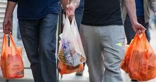

Groups want measures taken against single-use plastic usage
PETALING JAYA: Conservation groups are hoping that the results of the survey by the YouGov Omnibus on the use of straws and plastic bags among Malaysians will prompt more proactive measures to counter the problem. Many are calling for fines, more recycling programmes and even a review on the sale of single-use plastic bags. Ecotourism and Conservation Society Malaysia co-founder and CEO Andrew Sebastian said Malaysians were still not environmentally conscious – even in this modern age. “The results of the survey are not shocking at this point of time. Sebastian said proactive measures such as the introduction of stiffer fines, having more recycling programmes and a review on the sale of single-use plastic bags in stores were needed to tackle the matter.
He said the current charge of 20 sen per plastic bag imposed on consumers at outlets and stores should be increased to at least RM1. “The funds raised from that should go to a bona fide environmental cause. “If there is the will and consensus to ban smoking in restaurants, we certainly can do better as a civil society to stop the use of single-use plastic bags and straws,” said Sebastian. Plastic manufacturers and producers, said Sebastian, also needed to quickly invest in better products and materials should they want to continue to thrive in the business community.

Malaysian Nature Society president Prof Dr Ahmad Ismail said more aggressive educational programmes were needed to discourage the public from using straws and plastic bags. “It is not that easy to change people’s habits and lifestyle. “When they understand (that their choices can damage the environment), then they will take the necessary actions,” he said. Prof Ahmad said there should also be alternatives offered to the public, such as businesses. “Businesses need customers. By not providing straws or bags to the customers, (this may cause) them to lose customers.
“The government needs to solve the problem by helping businesses as well as protecting nature,”
Prof Ahmad
Prof Ahmad also believes that government agencies, non-governmental organisations, corporate and private sectors must all work hard to educate the public. In a statement, Federal Territories Minister Khalid Abdul Samad said from next Friday (March 15), the 20 sen pollution charge for shopper bags would now include biodegradable bags under the government’s Roadmap Towards Zero Single-Use Plastics 2018-2030. “Enforcement action will continue towards businesses and traders who still use conventional plastic bags,” he said.